Recombination, for English horn, bassoon, horn, trumpet, percussion, cello and double bass — Justin Yang
The score for Recombination is a computer-animated score, served from the cloud and displayed in a web browser, like an online video game.
English horn, bassoon, horn, trumpet, percussion, cello, double bass.
Percussion (one player): sleigh bells, castanets, tambourine, temple bowl, wood block, brake drum, bass drum, bowed vibraphone.
The full score is in C. Parts will be transposed.
Fundamentals are given at sounding pitch (C4 = middle C).
In a transposing part the cents figure is unchanged; a tuner will name the sounding note.
There are a number of animated conduction tools that are intuitive to follow and aid performers in realizing the score.
A scrolling cursor runs throughout the piece at a consistent speed and indicates when things are to be played. Notation is spaced proportionally in time — distance on the page equals duration.
Bouncing-ball conductors aid with rhythmic precision. The dotted vertical line marks the go-time for events.
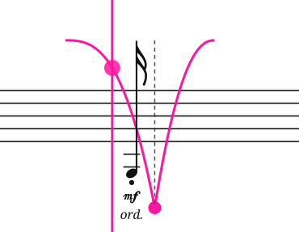
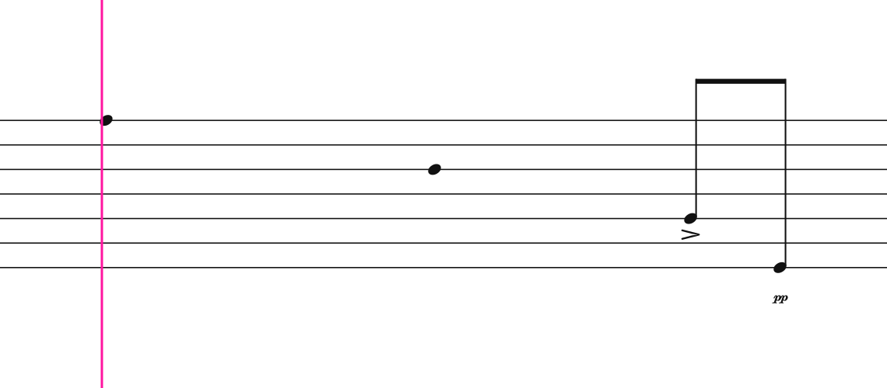
Tempo frame — To assist with rhythmic accuracy, some sections are overlaid with a conducted pulse in the form of vertical lines and a bouncing ball.
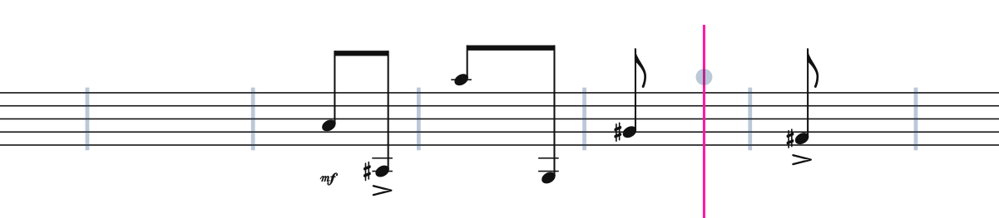
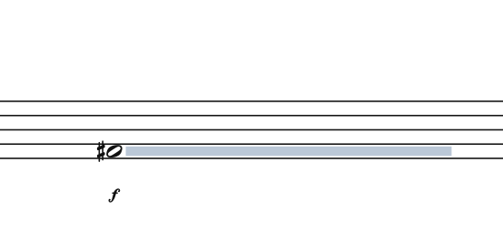
Duration line — Play the note for the duration of the line.
This score uses graphic curves to describe continuous change over extended periods of time. Green curves are used to describe continuous changes in volume: crescendo and decrescendo. Orange curves are used to describe continuous changes in pitch: glissando. Volume curves occupy the bottom half of the staff, and pitch curves occupy the top half of the staff. The volume curve is a static scale, from niente at the bottom to fff at mid-lane height. The pitch curve describes a relative scale, which varies per curve. There will be a notation header at the beginning of each curve that gives the pitch range and dynamic range of that curve. An animated curve follower appears alongside the cursor and gives the real-time position in the gradient. In the pictured example, the bottom of the orange pitch curve represents the G-sharp and the top of the curve represents the B quarter-flat.
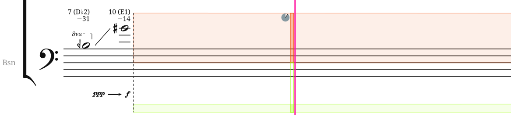
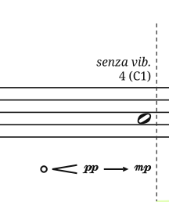
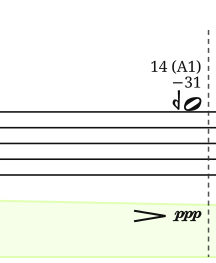
The notation header indicates the dynamic range. The ppp with an arrow to f indicates that the volume change for that curve will span from ppp to f. Sometimes there is a fade-in or fade-out (images two and three above).
This piece uses micro-glissandos to create continuously changing timbral effects, such as acoustic beating. These glissandos are less about pitch and more about using slight pitch variations to modify the ensemble timbre continuously.
A useful analogy is how acoustic beating is commonly used to tune stringed instruments. You would play two strings that are slightly out of tune and then adjust the pitch of one of them very slightly until the beating disappears. In this situation, you are not listening for the tiny variation of pitch, but you are listening to the timbral beating. And while you may have only changed the pitch by a few cents, not discernible by ear, you can hear the slowdown of the beating prominently.
During the gradient curves, the dotted vertical go-lines are rearticulation points — the rearticulation should happen at the go-line: breathe or retake the bow before, and rearticulate at the line. An animated dial counts down the time to the next rearticulation.
Every microtonally altered note in this score is a harmonic of a written fundamental, tuned in just intonation.
Each quarter-tone accidental is an approximation and will be approximate within a quarter-tone of the actual pitch. The cents notation provides the precise tuning from a plain tempered note — the same reading a chromatic tuner gives. For example, a pitch 41 cents above G♯ is notated G (the closest quarter-tone approximation) and the cents notation will be +41. The +41 would indicate 41 cents sharper than G♯, as a tuner would show it. No cents notation means played as written. There will not be any quarter-tone accidentals without accompanying cents notation even if the tuning is that precise quarter-tone.
Since all microtonal pitches in this piece come from the just-intonation tuning of a harmonic series, the fundamental and partial number are provided as courtesy notation. 26 (C1) indicates the 26th partial of the fundamental C1.
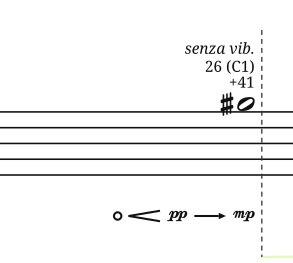
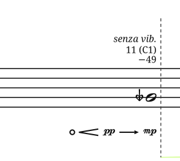
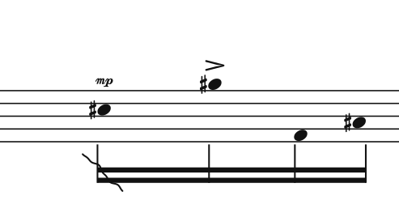
Ragged Stems — Play this rhythmic grouping with irregular spacing in the same amount of time. Instead of four even 16th notes, you would play four irregularly spaced notes in the space of four 16ths.
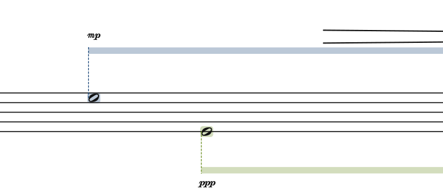
The bowed vibraphone is played in two parts, with the motor off. One part is highlighted in blue with blue duration lines at the top, and the other part is highlighted green with green duration lines at the bottom.
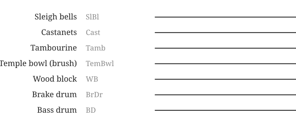
The temple bowl is played with a brush. All other beaters are at the percussionist’s discretion.
S3 · Vibrato
Senza vibrato throughout, except the middle section, marked ord.
The morph and morph header
The vibraphone
14 · The percussion legend (On the page: Percussion Legend.)
16 · The long tone and its navy bar (On the page: Duration line.)
20 · The percussion staff’s conventions